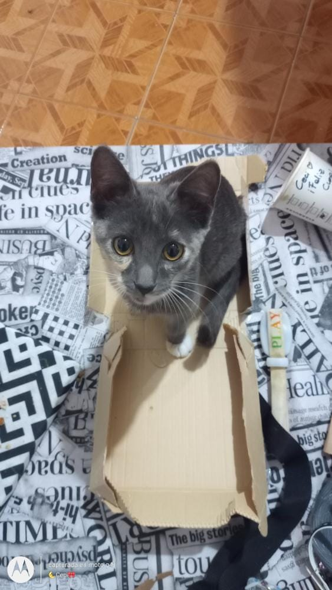

Sakura 🐾
¡Hola! Mi nombre es Sakura y mi mamá humana me adoptó cuando era una bebé, a través de FindMyPet. Ella dice que, al adoptarme, encontró en mí una familia y su amor para conmigo es incondicional.
Me cuida, me mima, se preocupa por mí y hasta me extraña cuando se va a su trabajo, al igual que yo a ella, pero la espero todos los días con mucha alegría porque, para mí, ella lo es todo.🧡 Mi mamá es súper responsable y, como vivimos en un departamento, me saca a pasear con pretal. A mí eso me encanta, porque me siento segura. Además, lleva siempre mi ratoncito de juguete.😍 ¡Gracias mamá humana! Gracias por adoptarme y cambiar mi vida, abrirme tu corazón y llenarme de amor. Por siempre juntas…🧡